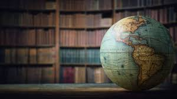

En la materia de Conciencia Histórica desarrollo la capacidad de comprender los acontecimientos del pasado y su relación directa con el presente, entendiendo que la historia influye en la forma en que vivimos actualmente. Aprendo que la historia no solo consiste en memorizar fechas y nombres, sino en analizar procesos históricos, identificar causas y consecuencias y reflexionar sobre cómo estos hechos han transformado a las sociedades con el paso del tiempo. Estudio acontecimientos importantes de mi país y del mundo, reconociendo su impacto en nuestra identidad, cultura, tradiciones y forma de organización social. También conozco personajes históricos relevantes y analizo sus decisiones, comprendiendo cómo sus acciones influyeron positiva o negativamente en diferentes épocas y contextos. En esta materia aprendo a comparar distintas etapas históricas para identificar cambios y permanencias en aspectos políticos, sociales, económicos, tecnológicos y culturales. Reflexiono sobre movimientos sociales, revoluciones, conflictos armados y transformaciones que han marcado a la humanidad, entendiendo que muchos de los derechos y libertades actuales son resultado de luchas del pasado. Además, desarrollo pensamiento crítico al analizar diferentes puntos de vista, fuentes históricas y testimonios, comprendiendo que un mismo hecho puede tener diversas interpretaciones dependiendo del contexto y la perspectiva. Esto me ayuda a formar mi propia opinión basada en información y argumentos sólidos. La conciencia histórica me permite valorar la diversidad cultural y respetar las distintas formas de pensar, vivir y organizarse que existen en el mundo. También comprendo la importancia de los derechos humanos, la evolución de las leyes y los sistemas de gobierno a lo largo del tiempo. Aprendo que conocer el pasado nos ayuda a evitar repetir errores y a tomar decisiones más responsables como ciudadanos comprometidos con la sociedad. Asimismo, esta materia fortalece mi capacidad de análisis, reflexión y argumentación, mejorando mi habilidad para participar en debates y expresar mis ideas con fundamentos claros. En general, la conciencia histórica me prepara para entender mejor el mundo actual y actuar de manera más consciente, informada y responsable en mi vida cotidiana.
